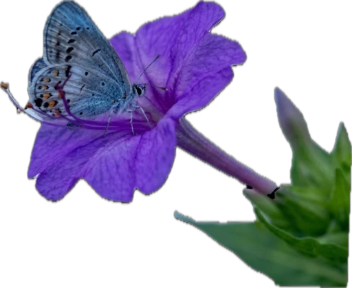
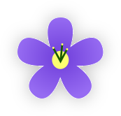

☀️ Освітлення
Любить яскраве світло, але добре росте і в півтіні.
Mirabilis jalapa
Mirabilis jalapa — екзотична багаторічна рослина з яскравими квітами, які розкриваються ввечері. Її часто називають «нічною красунею» за здатність оживати з настанням сутінків.
Дізнатися більше →
Mirabilis jalapa — це екзотична багаторічна рослина, відома своїми яскравими квітами, які розкриваються ввечері.

Mirabilis jalapa походить із тропічних регіонів Центральної та Південної Америки. У Європу вона потрапила у XVI столітті, де швидко завоювала популярність завдяки своїй незвичайній красі та здатності цвісти ввечері.
Mirabilis jalapa відкривається переважно ввечері, коли сонце заходить, і наповнює повітря приємним, ніжним ароматом. Саме тому її називають «нічною красунею».

Любить яскраве світло, але добре росте і в півтіні.
Регулярний, без застою води в ґрунті.
Легкий, родючий, з добрим дренажем.
Оптимально 18–28 °C. Не любить сильну спеку та холод.
Завантаження відгуків…
Маєте запитання про квітку чи проєкт? Напишіть нам.